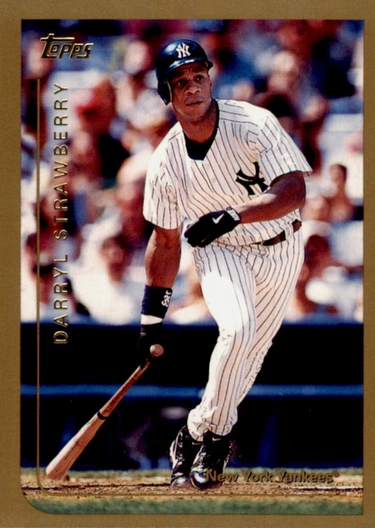

Darryl Strawberry "Straw"
Career Highlights & Facts
(Facts are AI-generated and may require verification)
- Selected 1st overall in the amateur draft.
- Earned Rookie of the Year honors.
- Selected to 8 All-Star games.
Would you like to find out more about Darryl Strawberry?
Player Biography
Darryl Strawberry January 4, 2012 / in BioProject - Person Home Run Champions Rookie of the Year 1980s All-Stars , 1990s All-Stars 1986 New York Mets , Nuclear Powered Baseball / by admin This article was written by Shawn Morris For many African American males growing up in poverty-stricken households throughout Los Angeles, sports offered a chance to break away from the cultural and economic restraints imposed on them by their surroundings. This was no different for a young Darryl Eugene Strawberry (born March 12, 1962, in Los Angeles). Darryl was the third boy born to Henry and Ruby Strawberry, and would be followed by two sisters. By 1970 the family was residing in a small house in the Crenshaw neighborhood of South Central Los Angeles. Strawberry recalled his father as being a negative influence early in his life. Henry Strawberry held down a steady job as a postal clerk, but suffered from many of the same vices that would plague Darryl’s life. He would often come home in drunken rages and physically assault Ruby, as well as Darryl and his older brother Ronnie. Much of Darryl’s younger years were spent in fear of their father until one night when he was about 10 years old. On that night Henry came home intoxicated, and began to verbally and physically assault Ruby. The police showed up and just like that, Henry was gone from his children’s lives, 1 only to reappear when it was evident Darryl was a remarkable talent on the baseball field and would be a top pick in the major-league draft. “It’s sad. I never had a real relationship with him. He never sat me down and talked to me kindly, never gave me a word of fatherly advice or counsel, never taught me to tie my shoe or hit a baseball. None of those things a father and son are supposed to do, he either ignored me or beat me, period,” Strawberry said in 2009. 2 What Henry did give his youngest son was a love for sports and athletic abilities. Like many of the other children in the Crenshaw neighborhood, Darryl went to the local park to watch his father play on one of the many softball teams in the area. His father could “whip the ball across the plate so fast you wouldn’t know where to start your swing. … He’d hit the long ball over and over again, every time he came to bat.” 3 After his father disappeared from his life, Darryl felt an absence and turned to sports as a refuge and escape from everything bothering him. “I was very good at every sport I tried,” he said. “I’m not bragging. It was just in me. I loved it. It was pure joy for me to play baseball, basketball, and football. While I was playing I could almost forget my anger and my troubles. Almost.” 4 Ruby was devoted to her family, held a full-time job at a local telephone company, and supported Darryl playing baseball. She knew how happy it made him, and she was shocked to see that on the field he was not the same, lazy Darryl she knew at home. After attending numerous junior high schools, Strawberry attended the predominantly African-American Crenshaw High School. Crenshaw was an athletic powerhouse. Scouts came to Crenshaw games; it was Darryl’s chance to get noticed, to gain the fame and notoriety so many young athletes from similar circumstances were searching for. Basketball was his first love and his gangly frame gave him an advantage on the court, but baseball came the most natural to him. “Right from the start I could pitch, I could hit home runs, I could steal bases, I could field. I didn’t think much about it, I didn’t study the game, I just went out there and did it.” 5 By the time he reached Crenshaw, Strawberry had earned a reputation throughout the Los Angeles Little League, but none of that mattered to Crenshaw baseball coach Brooks Hurst. When Darryl entered Crenshaw High for the 10th grade, he was already 6-feet-3. He was long and lean and covered with sinewy muscle, not the type created by hours in a weight room or supplements, but the real thing. “He had the body of a basketball forward and the natural baseball swing, a powerful, looping uppercut, of a historic homerun hitter,” a writer said of him. 6 To Brooks Hurst, Darryl was just like many of the young black men he had coached, full of talent and lacking discipline. At Crenshaw, Hurst did his best to instill the qualities his players were lacking to help them succeed on and off the field. Any backtalk or mouthing off to him and he would make them run till they dropped from exhaustion. 7 For many of his players, Hurst was the only stable male figure in their lives. He was familiar with Darryl and his situation; both older brothers had played for him at Crenshaw. Hurst did his best to watch over Darryl and guide him to make the right choices during his three years at Crenshaw. Strawberry struggled his first year in high school; although there was no denying his talent, he was given no special treatment under Hurst. He tried to drill into Darryl to “beat the ball to the spot” when playing the outfield and to run hard for balls that fell in for base hits, not just glide to them and let singles turn into extra bases. Coach Hurst often found himself annoyed with Darryl and his approach of only giving a half-effort. “I had to sit him down and talk to him a lot. I had him run laps. I would tell him: The scouts come in here with assumptions about inner-city ballplayers. You have to counteract that. Don’t give them the ammunition. But finally, I just ran out of patience.” 8 Finally, Darryl’s first high-school season ended early when he was kicked off the team. “I just said to him, ‘This isn’t working out. I hope you want to come back next year,’ ” Hurst recalled. “Darryl took it pretty well. He still came to games. He helped lug the equipment.” 9 Despite his talent, when Strawberry came back for the 1979 season there were some who thought he was not the best talent on the team. He also had to contend with Corrie Dillard and another player who would go on to the major leagues, Chris Brown . Besides those three, the rest of the Crenshaw team was also talented, so much so that many of the second-stringers would end up with professional contracts. On the playing field the 1979 Crenshaw team was in the midst of a spectacular season. Strawberry was having an outstanding year at the plate, in the outfield, and when he took the mound. The team easily defeated many of its inner-city opponents. Early in the season, the Los Angeles Times reported, “(A)fter a 15-5 mugging of Hamilton, Crenshaw has now scored 31 runs in its last two games.” 10 Many of Darryl’s relatives who had been largely absent from his life began to appear at his games as well, including his father. Coach Hurst did his best to shield his players from the circus enveloping them, and keeping their focus on the game itself. Throughout the season the team kept playing at a high level and by the time the regular season was drawing to a close Crenshaw had lost only a handful of games — and in each of those cases Hurst had benched one of his star players for disciplinary reasons. When the regular season finished, the Crenshaw High Cougars entered the Los Angeles Unified School District baseball playoffs. Anchored by senior Chris Brown and junior Darryl Strawberry, it was the first inner-city school in many years that had the talent to compete against those in the San Fernando Valley that benefited from manicured fields, booster clubs, and year-round instruction. 11 Playing the way they had many times during the regular season, the Cougars cruised their way through the first two rounds of the playoffs by a combined score of 23-4. Nothing, it seemed could keep Crenshaw from hitting. In the semifinal round they powered their way over Monroe High by a score of 10-7. 12 In the three playoff games Strawberry hit three triples in addition to a home run, and was the winning pitcher in two of the contests. 13 Next stop for Crenshaw was the championship game at Dodger Stadium . On June 6, 1979, the Cougars boarded the bus for the short trip to Dodger Stadium. Their opponent was Granada Hills, a team that played with few mistakes and relied on the “small ball” approach, lots of bunting, and good defense. Their third baseman was a high-school football standout, Stanford-bound John Elway. The Crenshaw players had their work cut out for them, and when Granada Hills jumped out to an early 2-0 lead; their task became much more difficult. A strong third inning put Crenshaw back on top by a run and the Granada Hills coach pulled Elway from third base and put him in as pitcher. After his eight warmup pitches, Elway struck out the next batter to end the inning. On the mound Strawberry began to crumble. Unnerved by the Little League tactics of fake bunts, he began to become erratic and after walking several batters he was pulled and sent to the outfield. By the end of the fifth inning, Granada had scored another six runs on three hits because of Crenshaw’s bad pitching and sloppy fielding, and the Crenshaw hopes were in rapid decline. 14 Elway shut the Cougars down. “The team that scout George Genovese considered from top to bottom, the most talented assemblage of high-school talent ever, could not win the LA city championship.” 15 When Strawberry returned to Crenshaw for his senior year all of the attention was lavished upon him. Without Brown to share the spotlight, it became the season of Strawberry. Coach Hurst was continuously chasing agents off the baseball field and out of the Crenshaw hallways. Strawberry often found himself surrounded by an entourage and those looking for any piece of stardom that association with him brought. As his ego grew, his attitude only seemed to worsen, according to some teammates. George Cook recalled, “Darryl Strawberry didn’t listen to [Coach Hurst].” 16 The press buildup surrounding Strawberry and the coming baseball draft overshadowed anything else he accomplished his senior year. Sports Illustrated published a feature on Strawberry late in his senior season, with a picture caption that said, “Darryl, 18, is likened to Ted Williams .” 17 “He’s got a Williams-type physical makeup — tall, rangy, good leverage,” scout Phil Pote told Sports Illustrated . “He’s got bat quickness, he can drive the ball. The ball just jumps off his bat.” 18 Strawberry had dreamed about being the first overall pick in the draft, and in June of 1980, the New York Mets made that happen. The Mets were hoping he would help turn the franchise around. Not only did he have the potential to help on the field, he could provide them with much-needed box-office revenue as well. The team provided him with a $200,000 signing bonus to forgo college and flew him to New York to show him off to the press. But before Strawberry was able to play in Shea Stadium he had to first prove himself in the minor leagues. A few days later, Strawberry found himself in a landscape vastly different than that of Manhattan or Los Angeles. Kingsport, Tennessee, was home to the Mets’ team in the rookie-level Appalachian League and Strawberry’s first step in the Mets farm system. During that 1980 season, in 180 plate appearances he batted .268 with five home runs. His work ethic was still sloppy, according to some and he was often late arriving to the stadium, onetime even missing a game. 19 A player not of Strawberry’s status would have had harsh repercussions for missing a game, but not Strawberry; his absence was largely ignored by those in the organization. The following season Strawberry was assigned to the High-A Lynchburg Mets. He continued to struggle and failed to live up to all the hype that was heaped upon him before the draft. Off the field, the 19-year-old Strawberry was homesick and called his mother every day. On the field he was struggling against many of the pitchers he faced. They easily fooled him with hard fastballs inside and breaking balls. Strawberry possessed the power to put the ball into play, but he struggled to make the contact that had made him a legend at Crenshaw. In 123 games with Lynchburg in 1981, Strawberry managed to hit 13 home runs and bat .255 for the season. The next spring Strawberry continued to climb the farm-system ladder, and started the season with the Double-A Jackson Mets. It was in Jackson, Mississippi, where he became locked-in at the plate and began to flash the talent the Mets saw in him when they drafted him. He began to see the ball better and figure out opposing pitchers. Although he struck out 145 times, by the end of the season he had driven in 97 runs and hit 34 home runs. Rather than take the winter off, the Mets had Strawberry extend his year by playing winter ball for a team in Caracas, Venezuela. He credited the experience with speeding up his development and better preparing him for the coming season. Strawberry remarked, “I felt confident after my season in South America because I’d been able to hit some of their best pitchers.” 20 To start the 1983 season, the Mets sent Strawberry to their top affiliate, the Triple-A Tidewater Tides. The organization wanted to keep him in the minors for one more season before bringing him up to New York, but many believed he would see the Big Apple before the year was over. Under manager Davey Johnson , Strawberry got off to a great start at Triple A. “My first ten or so games at Tidewater were spectacular. Whether I had improved to the point where I could hit anything any Triple-A pitcher could throw, or whether Triple-A pitching wasn’t as good as it was supposed to be, I don’t know,” he said. 21 At the same time, the Mets were off to a dreadful start and the New York newspaper headlines began to call for Strawberry. In early May Darryl was summoned from Tidewater. Mets general manager Frank Cashen regretted having to call him up ahead of schedule, but Strawberry had the potential to help fill the empty seats and on May 6, 1983, he made his major-league debut. 22 Strawberry stood an imposing 6-feet-6 with a playing weight of 190 pounds; he batted and threw left, and was a right fielder for most of his career. His debut, against the Cincinnati Reds was less than spectacular, with three strikeouts and a foul popup during six plate appearances in an extra-inning win by the Mets. Strawberry also worked a couple of walks and stole a base late in the game. The Mets’ manager, George Bamberger , encouraged the rookie to go out onto the field and have fun. However, Bamberger resigned on June 2 and was replaced by Frank Howard , one of his coaches. Howard began to demand more out of Strawberry and assigned hitting coach Jim Frey to help. Under Frey’s tutelage, Strawberry began to blossom and adjust to major-league pitching. His struggles at the plate began to disappear and in September Strawberry found his groove. It was also at this time that Strawberry began to succumb to the New York lifestyle and started experimenting with cocaine. His immaturity and desire to be liked left him vulnerable to negative influences. “Darryl was someone who always wanted to be liked,” said his mother, Ruby. 23 During his rookie campaign Strawberry was introduced to cocaine by two Mets veterans who told him, “It was the thing to do in the big leagues.” 24 Despite his off-field habits, Strawberry continued to produce quality numbers. His 108 hits, 26 home runs, 74 RBIs, and 19 stolen bases were enough for him to be voted the National League Rookie of the Year. After the season Howard was replaced as manager by Davey Johnson. Under Johnson, Strawberry and the Mets became a powerhouse franchise for the rest of the decade. Once Johnson was at the helm, the Mets began to turn things around on the field and produce wins with regularity. The attendance at Shea Stadium began to increase, and it was becoming clear throughout the city that the Yankees were not the only show in town anymore. Rookie Dwight Gooden was a stud on the mound, and Strawberry was continuing to rise to stardom in the outfield, being named to the All-Star team in July. He also began to use amphetamines with regularity during the 1984 season. 25 Most members of the hard-partying Mets team already were, as amphetamines allowed the players to go drink and abuse drugs all night, and play the next day with no hangover or ill feelings. By the end of the season, Johnson had guided the Mets from a team that came in last place the previous year to a second-place finish in the NL East. The 1985 season again saw an increase in the number of Mets victories; the team that won only 68 games in 1983 rang up 98 victories in 1995. Strawberry continued to produce at the plate and help put fans in the seats. Attendance at Shea Stadium was now more than double that of his rookie year: 2.7 million vs. 1.1 million. Strawberry was also married that year to Lisa Andrews, a tumultuous relationship that resulted in court appearances and ultimately divorce. Although he appeared in 37 fewer games than he did in 1984 due to minor health issues and slight injuries, Strawberry still scored 79 runs and hit 29 home runs, both more than his previous year’s total. While it was enough to earn Strawberry a trip to his second consecutive All-Star Game, his performance was not enough to help power the Mets into the postseason. But that would change the next season. “We had a sense of destiny in 1986, a belief that it would all come together for us in a great, historic display of baseball power,” said Strawberry. 26 The expectations were high for the Mets as early as spring training; they had won 98 games the season before and were in almost every aspect more skilled, more intense, and more arrogant than the Cardinals, Cubs, and the rest of the NL East. 27 After an indifferent start to the season, things began to turn around for the Mets. They went on one of the greatest runs in franchise history, reeling off 11 wins in a row before losing a game, then winning another seven in a row. The Mets were on fire through May. Although he was having a great year on the field, off it Strawberry continued to alienate himself from teammates as his ego grew. His head was as large as the Goodyear Blimp, and with each new magazine cover story and autograph request it only got bigger. His teammates felt he was vicious and selfish, taking a great deal of pride in making others feel inferior. 28 By now Strawberry was routinely abusing drugs and drinking heavily in the clubhouse. Under the MLB drug policy in place in the 1980s, no team could compel a player to take a drug test, and with the Mets winning in amazing fashion on a regular basis, no one was willing to rein in Strawberry and get him under control. For most of the 1986 season the Mets were the first-place team and the others in the division futilely chased them. The 108-win Mets were heavy favorites to capture the World Series. The National League Championship Series, went six games and included two thrilling extra-inning contests before the Mets emerged victorious over Houston. Strawberry hit a crucial home run in Game Three to help propel the Mets to victory, and finished the NLCS with two home runs and five RBIs. The 1986 World Series, pitting the Mets against the Boston Red Sox, opened at Shea Stadium on October 18 . After six games the teams were tied with three victories apiece, and Strawberry was a nonfactor at the plate. But in Game Seven , when it came time to deliver, Strawberry stepped up. Boston had mounted a mini-rally in the top of the eighth inning to pull within one run of the Mets, but when Strawberry led off the bottom of the inning with a solo home run, there was no doubt it was New York’s night. The miracle season of 1986, highlighted by so many late-game heroics and the team’s never-say-die attitude concluded with the Mets as the world champions. The Mets’ descent from the World Series heights started before the 1987 campaign when ace pitcher Dwight Gooden was admitted into a drug-treatment center a week before the start of the season. Strawberry was able to hide his demons throughout the season and produced at the plate. He had career highs with 108 runs scored, 104 RBIs, 36 stolen bases, and 39 home runs. Despite his increased offensive output, the Mets finished second in the division and missed the playoffs. In 1988 Strawberry again reached the century mark in runs scored and RBIs, smashed a league-leading 39 home runs, and led the National League in slugging and OPS. He was named to his fifth straight All-Star Game and was runner-up to Kirk Gibson for the MVP. The Mets finished in first place in the NL East, winning 100 games. However, they failed to recapture the magic of 1986 and fell to the Los Angeles Dodgers in seven games in the NLCS. In 1989 Strawberry was unable to repeat the success of the two previous seasons. Across the board his numbers fell off dramatically and the turmoil in the Mets clubhouse spilled out in front of the media when Strawberry and teammate Keith Hernandez got into a scuffle during team picture day with the cameras rolling. 29 As Strawberry suffered through his worst year with the Mets statistically (.225 batting average), the team began to falter and failed to make the postseason. When Davey Johnson was fired early in the 1990 season, Strawberry declared he would leave the Mets at the end of the season as a free agent. He performed well and earned a seventh consecutive All-Star appearance. His last season as a Met concluded with 37 home runs and a career-best 108 runs batted in. That offseason Strawberry was true to his word and left the Mets to return home to Los Angeles, signing a five-year contract for $20.25 million with the Dodgers. Strawberry’s first year in LA, 1991, was his best in Dodger blue, but even though he was named to his eighth All-Star contest in July, he batted just .265 and his other numbers were down. In 1992 Strawberry played in only 43 games before injuring his back. He had back surgery in September. He tried to return far too soon and was off and on the disabled list of much of 1993, getting just 100 at-bats as his batting average tumbled to a disappointing .140. 30 As he fell apart on the baseball field, his personal life was no better. He was going through a messy and public divorce from Lisa, and the ever-present drug- and alcohol-abuse rumors swirled around him despite his claims of sobriety. Eventually Strawberry came clean to the Dodgers about his addiction and they placed him on the disabled list, and sent him off to the Betty Ford Clinic. When he was finally released from treatment, the Dodgers cut ties with the once-hailed hometown hero. After being away from the game for a little over a year, Strawberry found a team willing to take another chance on him and signed with the San Francisco Giants on June 19, 1994. Strawberry was now 32 and promised the team he was ready to live a drug-free lifestyle. The Giants felt his guarantee of sobriety was genuine and took a chance on the slugger. With Strawberry in the lineup, the Giants flourished and won nine straight to come within 4½ games of the division-leading Dodgers. Despite his less than overwhelming numbers — 4 home runs, 17 RBIs, and a .239 average in 92 at-bats — the Giants were impressed. The players’ strike of 1994 interrupted the team’s plans to capture the division from the Dodgers, but the Giants were left with a positive impression of Strawberry and his recovery. 31 He had a job waiting for him in 1995 in San Francisco. But Strawberry would not get the chance to go back to the Bay Area. Troubles with the IRS arose over unreported income from card-show appearances, and, facing the prospect of jail time, Strawberry relapsed into using hard drugs and began to fail drug tests and display erratic behavior. While he was prepared to go to jail for the income-tax charges, Strawberry was let off with probation, community service, and a hefty bill for back taxes. But once again he would get another chance to turn his baseball career around, this time with the New York Yankees. Yankees owner George Steinbrenner believed he could rehabilitate Strawberry and that the 296-foot porch in right field was no match for his uppercut swing. From 1995 through the 1999 season Strawberry was a member of the Yankees, but the dreams of Strawberry home runs landing in Yankee Stadium’s right-field porch with consistent regularity were never realized. He was never able to recapture the glory he had experienced across town at Shea Stadium. The 1995 season was full of setbacks for Strawberry. His legal troubles resulted in court-ordered restrictions that dictated where he could reside and the hours he was able to be away from his residence. Steinbrenner’s determination to help Darryl turn his life around resulted in the Yankees appointing a full-time “guardian” to shadow Strawberry at all times, as well as regular drug testing to ensure that he would not slip up again. After rehabbing at the Yankees’ facilities in Tampa, Strawberry was ready to hit the field. In 1995 he played in 31 minor-league games for the Tampa Yankees, Gulf Coast League Yankees, and the Columbus Clippers before rejoining the big-league club for 32 games toward the end of the season. Strawberry spent 63 games in 1996 with the big-league club and hit 11 home runs. He helped the Yankees defeat the Orioles in the ALCS, hitting three home runs and collecting five RBIs, then went on to win another World Series, over the Atlanta Braves, alongside former Mets teammates David Cone and Dwight Gooden. In 1997 injuries derailed Strawberry and he played in only 16 minor-league games and 11 for the Yankees. For the first time in his career he failed to hit a home run that season. Then 1998 was a bounce-back season for Darryl at the plate, as he played in over 100 games for the first time since the 1991 season. In a part-time role he belted 24 home runs and had 57 RBIs to go along with a .247 average. For the third time in his career he became a World Series winner, but that accomplishment was overshadowed by a diagnosis of colon cancer that kept him from playing in the World Series. In 1999 after cancer treatments after a 140-day MLB-mandated suspension for possessing cocaine and soliciting an undercover police officer for sex, the 37-year-old Strawberry returned to the Yankees. In limited playing time he managed only three home runs. However he was able to recapture postseason glory once again when he hit a decisive three-run home run that played a critical role in helping the Yankees sweep the Texas Rangers in the Division Series, then hit another homer as then the Yankees knocked off Boston in the ALCS before moving on to another World Series championship, over Atlanta. When the season concluded Strawberry retired from baseball as an eight-time All Star with four World Series rings — not a bad accomplishment for an inner-city kid from an impoverished neighborhood. After baseball Strawberry continued to struggle with addiction and run-ins with the law. In 2000 his cancer returned and he started chemotherapy. However, this setback was not enough to quench his desire for drugs and he spent much of the next three years in and out of treatment centers and prison on drug-related charges. As of 2015, Strawberry was married to his wife, Tracy, and was an ordained minister. He devoted a great deal of his time to his family, church, and his charity work for those affected by autism. He said he remained remorseful for his past actions and was fully aware of the impact they had on his career. With his natural talent Strawberry could have been one of baseball’s greatest hitters if it were not for his naïve nature, immaturity, and ultimately his substance abuse. In a book published in 2009 he admitted, “I made some good choices, and I made some really bad ones.” 32 Notes 1 Darryl Strawberry with Arthur Rust Jr., Darryl (New York: Bantam Books, 1992), 82-88. 2 Darryl Strawberry, Straw: Finding My Way (New York: Ecco, 2009), 9. 3 Strawberry, Darryl , 76-77. 4 Strawberry, Straw, 21. 5 Strawberry, Straw, 21-22. 6 Michael Sokolove, The Ticket Out: Darryl Strawberry & the Boys of Crenshaw (New York: Simon & Schuster Paperbacks, 2004), 51. 7 Sokolove, 35. 8 Ibid. 9 Sokolove, 54. 10 Sokolove, 75. 11 Sokolove, 80. 12 Sokolove, 82-84. 13 Sokolove, 87. 14 Sokolove, 87-89. 15 Sokolove, 90. 16 Sokolove, 59. 17 Sokolove, 96. 18 Cited in Sokolove, 96. 19 Sokolove, 100. 20 Strawberry, Darryl , 128-129. 21 Ibid. 22 Sokolove, 101. 23 Bob Klapisch, High and Tight: The Rise and Fall of Dwight Gooden and Darryl Strawberry . (New York: Villard Books, 1996), 26. 24 Ibid. 25 Klapisch, 23-26. 26 Strawberry, Darryl , 188. 27 Jeff Pearlman, The Bad Guys Won (New York: Harper Collins, 2004), 43. 28 Pearlman, 137-138. 29 Klapisch, 71. 30 Klapisch, 77. 31 Klapisch, 135-138. 32 Strawberry, Straw: Finding My Way , 199. Full Name Darryl Eugene Strawberry Born March 12, 1962 at Los Angeles, CA (USA) Stats Baseball Reference Retrosheet If you can help us improve this player’s biography, contact us . Tags Home Run Champions · Rookie of the Year · 1980s All-Stars · 1990s All-Stars · 1986 New York Mets · Nuclear Powered Baseball Share this entry Share on Facebook Share on X Share on LinkedIn Share on Reddit Share by Mail
Career Totals
| WAR | AB | H | HR | BA | R | RBI | SB | OBP | SLG | OPS | OPS+ |
|---|---|---|---|---|---|---|---|---|---|---|---|
| 42.1 | 5418 | 1401 | 335 | .259 | 898 | 1000 | 221 | .357 | .505 | .862 | 138 |
Statistics via Baseball-Reference.com
The Original Clue